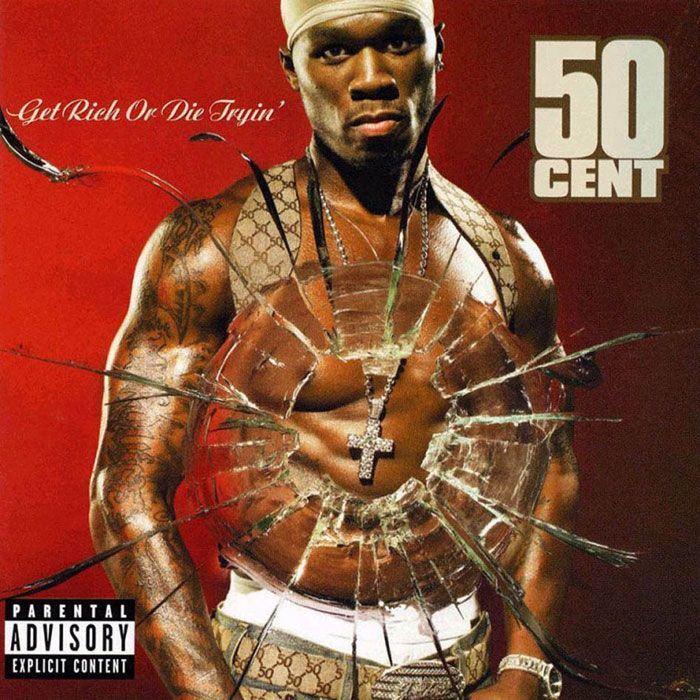
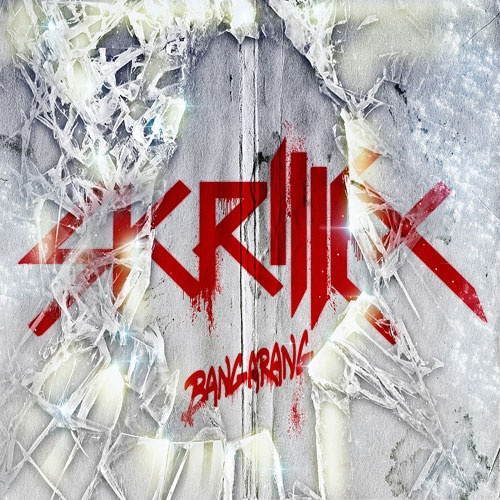
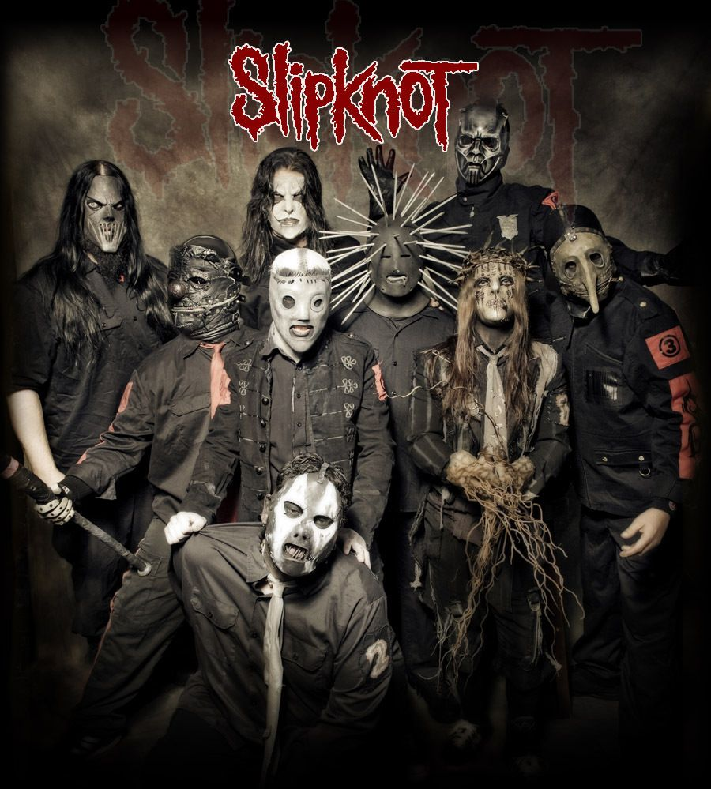
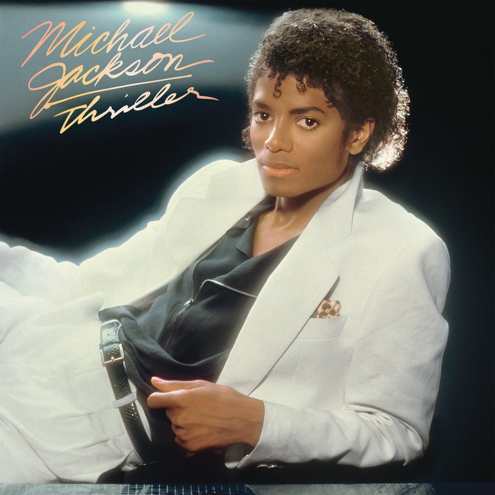
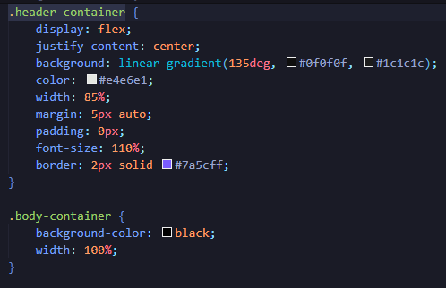
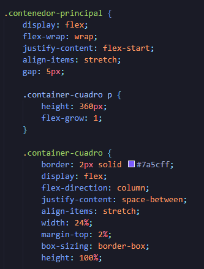
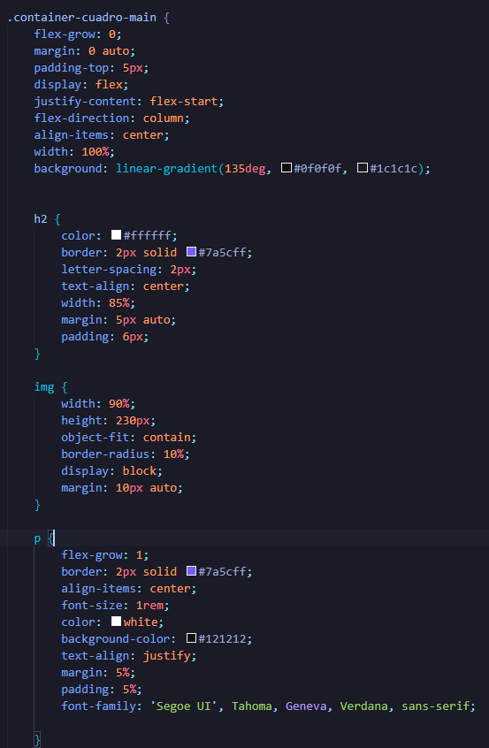

Bueno, empezando por este género, lo escucho para sentirme todo poderoso; es decir, para sentirme bien. Como se ve en la imagen, me gusta mucho escuchar a 50 Cent y, de todas las canciones que tiene, como In da Club, P.I.M.P., Don't Push Me y Candy Shop, la canción que más me levanta es Many Men. Esa canción es arte puro. Y no solo lo escucho a él, también escucho a Eminem, Snoop Dogg, Dr. Dre y The Notorious B.I.G. (Biggie).

Este sí es para subir mi adrenalina; lo escucho más cuando algo que estoy haciendo me está saliendo bien. Y, cómo no, Skrillex es la mejor opción. Yo de él solo conocía la canción Bangarang, pero al seguir escuchándolo descubrí más canciones como Kyoto, Make It Bun Dem, First of the Year, Reptile’s Theme y Rock n’ Roll. También escucho no solo a Skrillex, sino también a Marshmello, Steve Aoki, Avicii, Alan Walker y Martin Garrix.

El heavy metal me provoca la misma adrenalina que la música electrónica, especialmente Slipknot, por la energía de sus canciones. Antes solo conocía Psychosocial, pero después descubrí temas como Duality, Unsainted y Wait and Bleed. También escucho bandas como Metallica, AC/DC, Avenged Sevenfold, Led Zeppelin, Iron Maiden, Guns N' Roses y Bon Jovi.

Este género es para relajarme. Para mí, el pop es ideal para disfrutar del ritmo de la música, como las canciones de Michael Jackson. Cada vez que pongo una canción de él, hasta la canto en inglés; me gusta mucho. Las que más escucho son Billie Jean y Beat It. Y no solo escucho a Michael Jackson, también escucho a Bee Gees, LMFAO y The Beatles. Escucho más artistas, pero esos son los que recuerdo por ahora.
Este mismo estilo de pagina esta en el apartado de peliculas, por si es que no se ve, es porque es lo mismo solo lo que cambia es el estilo de la pagina


